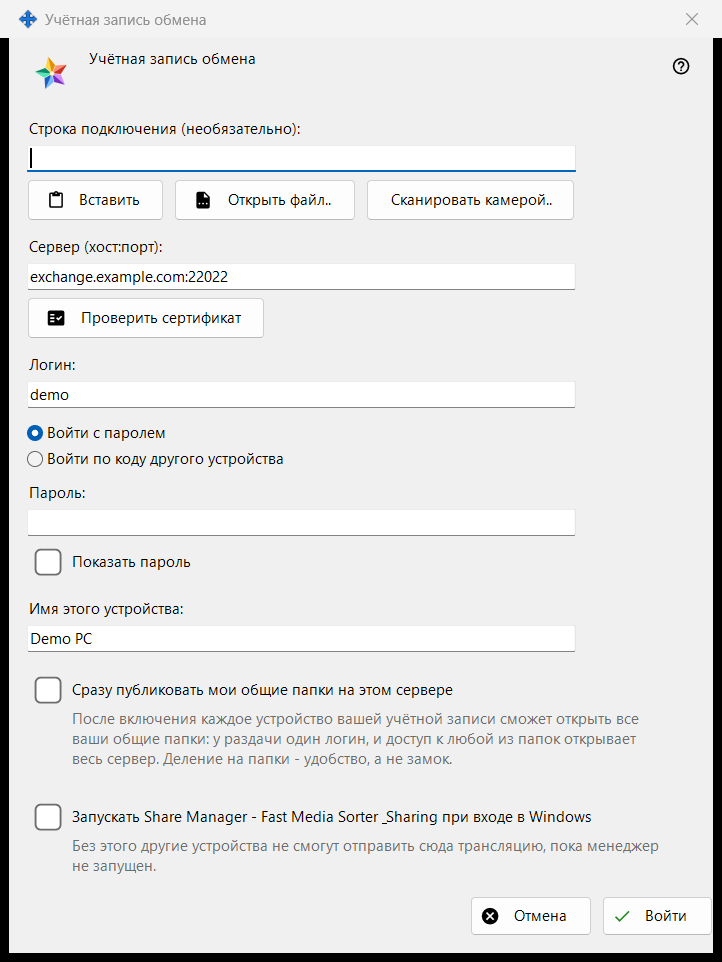
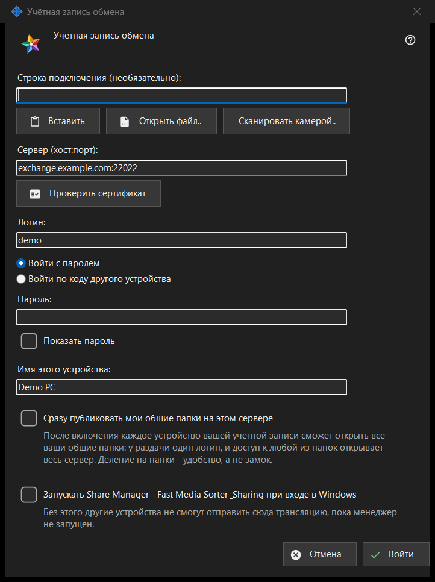

Учётная запись обмена
Назначение
Входит с этого ПК как устройство учётной записи на сервере Media Exchange Server. Окно открывается кнопкой «Войти..» на странице «Учётная запись обмена» в настройках Share Manager, а также кнопкой «Опубликовать через сервер обмена..», которая сразу отмечает пункт публикации.


Порядок действий
- При желании вставьте, откройте или отсканируйте строку подключения: она заполнит сервер и логин.
- Нажмите «Проверить сертификат»; если система ему не доверяет и отпечатка нет в строке, сверьте отпечаток с названным оператором и нажмите «Доверять этому сертификату».
- Введите логин и пароль или код сопряжения.
- Задайте имя устройства и параметры.
- Нажмите «Войти».
Элементы окна
Строка подключения
Поле «Строка подключения (необязательно):» принимает строку, которую вы вставляете кнопкой «Вставить», загружаете из файла .fmsexch или из картинки с QR-кодом кнопкой «Открыть файл..» либо считываете кнопкой «Сканировать камерой..». Строка только заполняет сервер и логин: до нажатия «Войти» подключения не происходит. Строка с отпечатком закрепляет этот сертификат, и сверять ничего вручную не нужно. Строка с приглашением переключает окно на регистрацию. Непригодная строка получает однострочный отказ.
Сервер и сертификат
«Проверить сертификат» подключается к серверу из поля «Сервер (хост:порт):» и показывает «Отпечаток сертификата сервера:». Если система доверяет сертификату, закреплять его не нужно. Иначе сверьте отпечаток с тем, который дал оператор сервера, и нажмите «Доверять этому сертификату»: только эта кнопка принимает сертификат, неизвестный системе. Изменение текста сервера отменяет проверку. Enter ничего не делает, если сертификат не принят, поэтому пароль не уйдёт на сервер, за который никто не поручился.
Логин, пароль и код сопряжения
Введите «Логин:» и выберите «Войти с паролем» («Пароль:», с флажком «Показать пароль») либо «Войти по коду другого устройства» («Код сопряжения:», его выдаёт другое устройство той же учётной записи). Поле очищается в момент отправки значения при любом исходе; устройство хранит только токен, но не пароль.
Регистрация по приглашению
Если строка содержит приглашение, два варианта входа заменяются регистрацией: «Пароль учётной записи:» и «Пароль ещё раз:» задают новый пароль, который должен подходить под показанные правила (не короче 10 символов, с заглавной и строчной латинской буквой и цифрой), а кнопка называется «Создать учётную запись».
Имя устройства и параметры
«Имя этого устройства:» (до 64 символов) сначала равно имени компьютера. Параметр «Сразу публиковать мои общие папки на этом сервере» выключен, если вы не пришли через «Опубликовать через сервер обмена..»; после включения каждое устройство вашей учётной записи может открыть все ваши общие папки, потому что у раздачи один логин. Последний параметр запускает Share Manager при входе в Windows (по умолчанию выключен), чтобы другие устройства могли отправлять трансляции на этот ПК.
Один сервер
Устройство принадлежит одному серверу. Вход на другой сервер спрашивает, покинуть ли текущий, и публикация на старом сервере прекращается. После неудачной попытки связи кнопка «Почему не подключается?..» открывает проверку подключения.
Настройки менеджера · Настройки общего доступа SFTP · Настройки сервера обмена